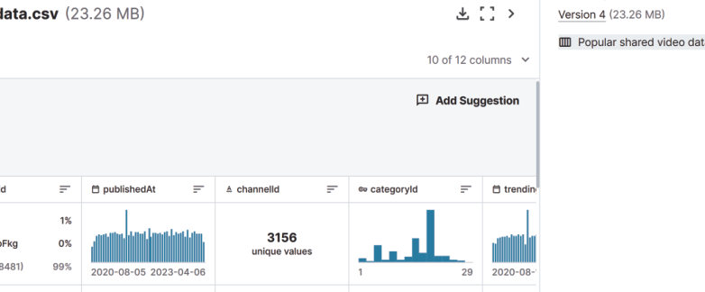

조회 수가 높은 영상을 만들려면 무엇을 생각해야 할까? 캐글의 인기 공유 동영상 데이터 5,000 개를 미니 코답으로 정렬하고, 영상 종류별 빈도와 평균 조회 수, 좋아요·싫어요·댓글 수와 조회 수의 상관관계를 그래프로 그려 친구에게 줄 조언을 데이터로 찾아보자.
데이터에 기반하여 문제를 해결하려면 먼저 문제를 명확하게 정의하고 문제 해결에 적합한 데이터를 수집해야 한다. 수집한 데이터는 사용 목적에 맞게 구분, 관리하여 분석에 적합한 형태로 구조화한다. 다음으로 데이터를 살펴보며 주요 속성을 파악하고, 데이터를 시각화하여 그래프로 표현하고 데이터 간의 관계를 분석한다. 마지막으로 분석 결과를 종합하여 데이터가 지닌 의미를 해석하고, 이를 바탕으로 논리적으로 의견을 주장할 수 있게 된다.
문제 정의 영상을 제작하려는 친구에게 동영상 공유 플랫폼(디지털 공간에서 사람들이 네트워크로 관계를 맺으며 가치를 만드는 서비스 체제)의 데이터를 분석하여 도움을 주려고 한다. 많은 사람이 보고 이용할 수 있는 영상을 만들려면 어떤 것들을 생각해야 할까?
데이터 수집 및 구조화 데이터 전문 사이트인 캐글(kaggle.com)에서 ‘Popular shared video data for educational purpose’를 내려받는다(23.26 MB, 약 19만 행). 코답은 먼저 5,000 행을 가져오며, 아래 미니 코답에는 교과서 코답 파일과 같은 5,000 행을 넣어 두었다. 분석에 필요 없는 속성은 지우고 이름을 한글로 바꾸었다.
| 영상 종류 번호 | 1 | 2 | 10 | 15 | 17 | 19 | 20 | 22 | 23 | 24 | 25 | 26 | 27 | 28 | 29 |
|---|---|---|---|---|---|---|---|---|---|---|---|---|---|---|---|
| 의미 | 영화/애니메이션 | 자동차/교통수단 | 음악 | 애완동물/동물 | 스포츠 | 여행/이벤트 | 게임 | 사람/블로그 | 코미디 | 연예/오락 | 뉴스/정치 | 방법/스타일 | 교육 | 과학 기술 | 비영리/활동 |
| 조회 수 | |
| 좋아요 수 | |
| 영상 종류(번호) | |
| 댓글 금지 여부 | |
| 동영상 고유 번호 | |
| 댓글 수 |
| 평가 기준 | 스스로 평가 |
|---|---|
| 컴퓨팅 사고력 문제 해결에 적합한 데이터를 수집하고 분석하여 문제를 해결할 수 있는가? | |
| 컴퓨팅 사고력 빈도, 평균, 상관관계를 그래프로 나타내고 해석할 수 있는가? | |
| 디지털 문화 소양 데이터를 기반으로 자신의 주장을 논리적으로 설명할 수 있는가? |